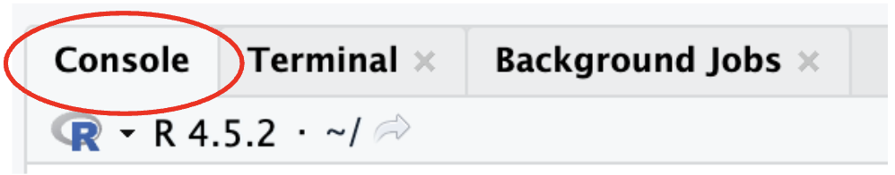
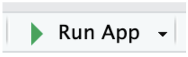
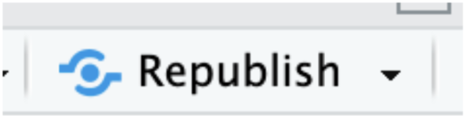

If you are getting errors when downloading packages like:
syntax error near unexpected token `"shiny"`
You are attempting to download your packages within the RStudio terminal. To download packages for R and RStudio, ensure you are in the console tab.

To see MyFavoriteAlbums in your browser, navigate to App.R, and click the Run App button located in the RStudio navigation bar. Clicking this button will open the local version of MyFavoriteAlbums in your browser.

If you have MyFavoriteAlbums deployed, you can also view MyFavoriteAlbums by accessing a link to your deployed application.
To deploy MyFavoriteAlbums, follow the MyFavoriteAlbums deployment instructions and the MyFavoriteAlbums publishing instructions.
MyFavoriteAlbums may not be recognizing your album data because your CSV is not named properly. MyFavoriteAlbums requires album data files to be named album-rankings.csv and will not recognize your file if it is named something else. MyFavoriteAlbums also requires your data file to be stored within the /data directory and have your working directory set properly.
This warning occurs in your RStudio console when your album data file is not named properly, your album data file is not located properly, or your working directory is not set correctly:
cannot open file 'data/album-rankings.csv': No such file or directory
To rename and locate your album data file properly, follow the instructions to properly add your custom music data to MyFavoriteAlbums.
To modify the year range in the Number One Albums tab, first verify your new range by finding the years of your oldest and newest rated albums. This can be done by viewing your logged data in album-rankings.csv.
Once you know the start and end years for your albums’ year range, follow the instructions to update the year slider for the Number One Albums tab.
The Artist Comparison tab also utilizes a year range to display your data. Make sure to modify the year range in the Artist Comparison tab by following the instructions to update the year range for the Artist Comparison tab.
If you have made changes to MyFavoriteAlbums and they are not showing up in your deployed version of the web application:
